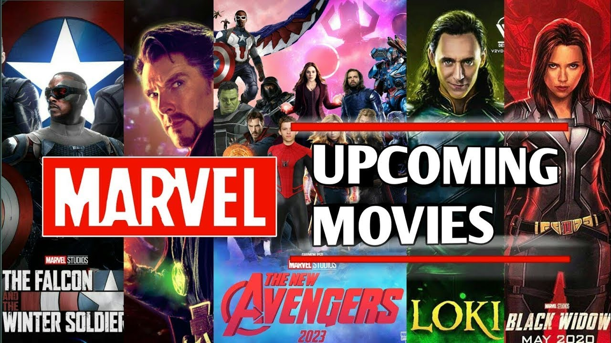
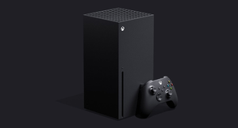

Black Panther 2 Reportedly Bringing Back Original’s Supporting Cast BY ANGELINA HUE NOV 20, 2020
Black Panther 2 is reportedly bringing back the original film’s supporting cast. Marvel is gearing up to shoot the sequel to Black Panther in Atlanta starting July and lasting more than six months. The sudden death of star Chadwick Boseman in the midst of a pandemic delayed production from the original March 2021 start, as director Ryan Coogler and the rest of Marvel grieved the loss of a legendary member of their team.
Though Boseman's performance as King T'Challa in Black Panther was widely praised, the talent of the supporting cast was frequently highlighted as well; they even won the award for Best Cast at the 2019 SAG Awards. Black Panther had a strong focus on family and community, which helped with the cast's dynamics. T'Challa's brilliant sister, Shuri (Letitia Wright) and Ramonda, the Queen Mother (Angela Bassett), filled out T'Challa's biological family, but he was also supported by many advisors, leaders, and fighters, like the dynamic spy Nakia (Lupita Nyong'o). Still, Wakanda wasn't free of tension, and M'Baku, leader of the Jabari tribe (Winston Duke), frequently butted heads with T'Challa.

According to THR, Wright, Bassett, Nyong’o, and Duke will return to reprise their roles in the sequel. There has been some speculation about Wright’s character taking on a more prominent role, and she herself has said that she would gladly take on the challenge if Shuri were ever to step up to the Black Panther role.
Perhaps most suggestive of any sort of plot for this sequel is that Mexican actor Tenoch Huerta, star of Netflix’s Narcos, is in talks to be cast as one of the antagonists. However, Marvel has not confirmed anything yet, nor has it spoken about how it plans to move forward on the sequel without Boseman. They have said, though, that they do not intend to use CGI to place Boseman in the film. As the cast and crew grieve Boseman and reconsiders the plan for T’Challa moving forward, it will be interesting to see how the returning cast will factor into the new story in the works.
Black Panther was a film that inspired many, led by Boseman’s brilliant performance. While the question of who will take over as leader of Wakanda is yet unanswered, it is nonetheless refreshing to hear that the supporting cast of the original film will be returning to Black Panther 2. Shuri will be back with her ingenious gadgets, Nakia with her compassionate leadership, M’Baku with his comfortably booming personality. While fans wait to hear more details about the sequel, they can in the meantime anticipate an exciting MCU Phase 4 complete with Thor: Love and Thunder, Spider-Man 3, and Eternals, among others slated for release in 2022.

Key Release Dates
- Black Widow (2021)
Release Date: May 07 2021
- Shang-Chi And The Legend Of The Ten Rings(2021)
Release Date: July 09 2021
- Eternals (2021)
Release Date: Nov 05 2021
- Spider-Man: Homecoming 3 (2021)
Release Date: Dec 17 2021
- Thor: Love And Thunder (2022)
Release Date: Feb 11 2022
- Doctor Strange In The Multiverse Of Madness (2022)
Release Date: March 25 2022
- Black Panther 2 (2022)
Release Date: May 06 2022
- Captain Marvel 2 (2022)
Release Date: July 08 2022
 Epic Games have released a new Fortnite update.. By Yousef Saifi |
 Destiny 2 Beyond Light review in progress..By Austin Wood |
Best Xbox Series X games.. By Vic Hood, Adam Vjestica, Stephen Lambrechts |